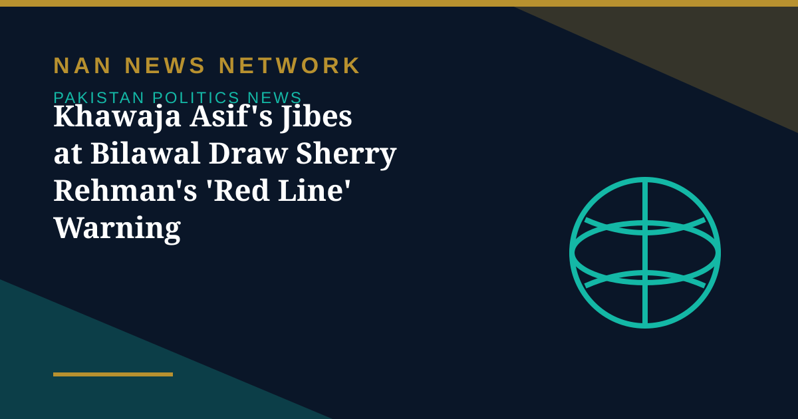

Khawaja Asif's Jibes at Bilawal Draw Sherry Rehman's 'Red Line' Warning

The war of words between the Pakistan Muslim League-Nawaz (PML-N) and Pakistan Peoples Party (PPP) continued over the weekend, with Defence Minister Khawaja Asif taking fresh jabs at PPP Chairman Bilawal Bhutto-Zardari, prompting party leader Senator Sherry Rehman to warn that he had \"crossed a red line\" with his remarks about the party and its leadership, Dawn reported on November 22.
A spat that began at the Karachi Press Club
The verbal sparring began after Bilawal's address at the Karachi Press Club, where the PPP chairman struck a critical note about the government's handling of the country's political and security challenges, despite his party being part of the ruling arrangement. His remarks, particularly his warning that dividing Sindh for the creation of new provinces could trigger bloodshed, drew sharp reactions from PML-N ministers. On November 19, Asif shared two video clips of Bilawal, one from an earlier parliamentary speech and another from the Karachi Press Club address, saying he had expected the younger generation to be \"better and more principled\" than his own, but had instead found them \"masters of duplicity\" who changed colours. He later called Bilawal \"not just a stakeholder, perhaps the biggest beneficiary\" of the system, and questioned the PPP chairman's alleged use of a property in Lahore's Bahria Town.
Bilawal House dragged into the row
Asif continued his criticism on Saturday by bringing the ownership of Bilawal House in Lahore into the debate, asking in a post on X who owned the \"palace-like fortress\" and who lived there. PPP senior leader Nadeem Afzal Chan responded by posting a video of party workers gathering at Bilawal House in Lahore, saying the property was the home of every PPP worker. In a statement, the PPP said Bilawal had directed party leaders to ignore the defence minister's remarks and concentrate on issue-based politics, while warning that the party was also familiar with the political controversies surrounding the PML-N leadership, referring to the Panama Papers, Avenfield properties and Al-Azizia Steel Mills cases. Rehman, meanwhile, urged the government to focus on people's problems rather than create new political fault lines, saying Bilawal wanted to prevent bloodshed, not shed it, and warning of a difficult winter with gas shortages and extreme weather. Even as the heated exchange continued, President Asif Ali Zardari and Prime Minister Shehbaz Sharif met again on Saturday to discuss the overall political situation, having earlier decided that all matters would be resolved through dialogue.
Sources: Dawn, November 22, 2026; The Express Tribune, November 22, 2026
More on Pakistan Politics News
- Government Firm on PTI's Share in Electoral Reforms Panel, Rejects Equal Seats Demand
- Minister Insists Referendum on New Provinces 'Will Happen'
- Federal Constitutional Court Strikes Down Sindh and KP Infrastructure Cess Laws
- Bilawal Urges Government to Empower Shehbaz, Let Him Complete Full Term and Engage PTI
- Zardari and Bilawal Agree Not to Withdraw Stance on New Provinces, CEC Meeting on the Cards
- Shehbaz and Zardari Agree to Resolve All Issues Through Dialogue After Bilawal Storm
- Sindh Govt Moves to Prevent Rival Rallies Over New Provinces on November 29
- Khawaja Asif Hits Back at Bilawal: 'He Who Claims Equity Must Come With Clean Hands'
- Senate Opposition Leader Offers Talks on Repealing 26th and 27th Amendments
- Bilawal Calls for Political 'Reset', Says System Was 'Deliberately Destroyed'
- Imran Khan Appeals to Three Chief Justices for 'Justice Before It's Too Late'
- PML-N, PPP Seek to Renew Political Amity as Shehbaz Plans Karachi Visit on Friday
- HRCP Warns of Escalating Threats to Democracy and Fundamental Freedoms
- Khawaja Asif Hints at Major Political Developments by the New Year
- Bilawal Calls Fazl, Condemns 'Government Actions' Against JUI-F as Protests Erupt in KP
- Zardari Meets PM Shehbaz in Lahore as New-Provinces Debate Rolls On
- Opposition Leaders Move Constitutional Court Seeking Release of Sohail Afridi and Detained Lawmakers
- Naqvi Floats Referendum on New Provinces, Then Holds Late-Night Meeting With Zardari in Nawabshah
- IHC Sets Imran Khan and Bushra Bibi's Appeals in £190 Million Case for Hearing on November 18
- Imran Khan's Sisters Uzma and Noreen Released After Nearly Two Months in Detention
- Azma Bokhari Challenges Salik Hussain to Quit Ministry Amid War of Words With Maryam Nawaz
- Bilawal Calls for 'Political Reset' Instead of New Provinces
- Peshawar ATC Reissues Arrest Warrant for Sohail Afridi in Radio Pakistan Attack Case
- Government, JI Hold Final Round of Talks as Party Demands End to Petroleum Levy
- Senate Panel: Centre Spent Rs5 Trillion on Devolved Subjects in Violation of Constitution
- PML-N Retains NA-77 and PP-203 in Punjab By-Elections
- ECP Summons Tarar and Five PML-N Lawmakers for November 12 Hearing; NA-77 Result Could Be Withheld
- By-Elections Under Way in NA-77 Gujranwala and PP-203 Sahiwal Today
- Shehbaz Briefs Nawaz Sharif on K-P Security and Economic Challenges at Jati Umra
- ECP Takes Notice of Alleged Code Violation by Attaullah Tarar Ahead of NA-77 By-Poll
- Ishaq Dar Contacts Liaquat Baloch as Government-JI Final Talks Set for November 10
- ECP Sets February 7 for First Phase of Punjab Local Government Elections as KP Polls Stay Halted
- Khawaja Asif Sees Bid for 'Alternative Arrangement' in Punjab as Maryam Sends Salik Rs5 Billion Defamation Notice
- ECP Suspends All Preparations for Local Government Elections in Khyber Pakhtunkhwa
- Opposition Agrees to Hold All Parties Conference Within 10 Days After Fazl Meeting
- Pakistan Tests Indigenous Fa'az Air-to-Air Missile, Its First Locally Developed Weapon of Its Kind
- UN Committee Reviews Pakistan's Progress on Economic, Social and Cultural Rights Today
- Government Offers PTI Five Seats on Electoral Reforms Committee — and PTI Asks for the 2013 Formula
- ECP Issues Show-Cause Notice to MQM-P Over Missed Intra-Party Poll Deadline
- MQM-P Launches Street Movement for New Administrative Units, Announces November 29 Rally
- Pakistan Welcomes US Mediation Offer on Taliban Talks — With Conditions
- PTI Hits Back at Shehbaz Sharif Over KP Criticism, Demands End to Governor's Rule
- China's CPC Minister Liu Haixing Arrives in Islamabad on First Official Visit
- PPP Courts Opposition to Join 30-Member Electoral Reforms Committee
- National Assembly Unanimously Passes Workplace Harassment Resolution as Parliament Is Prorogued
- National Assembly Passes Four Government Amendment Bills by Majority Vote
- Opposition Signals Willingness to Join Electoral Reforms Committee After PPP Outreach
- National Assembly Session Suspended After Speaker Finds House Lacks Quorum
- Pakistan Proposes Parliamentary Friendship Group With Turkmenistan
- Lahore High Court Judge Mohsin Akhtar Kayani Resigns, Citing Executive Grip on Judiciary
- Pakistan Says Afghan Firing Kills One in South Waziristan Border District
- Pakistan Marks Kashmir Black Day With Rallies Across the Country
- National Assembly Passes Seven Private Members' Bills, Sends Six to Committees
- Pakistan Strongly Condemns Houthi Missile Attacks Near Makkah and Madinah
- Pakistan, Saudi Arabia and Turkiye Reported to Hold Tehran Talks on De-escalation
- Pakistan LPG Shortage Worsens as Iran Border Crossings Close
- Pakistan Ends Machine-Readable Passports and Switches Fully to E-Passports
- Pakistan Calls for a Fairer Global Order at the United Nations